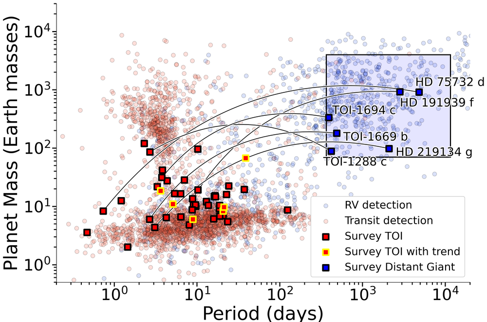
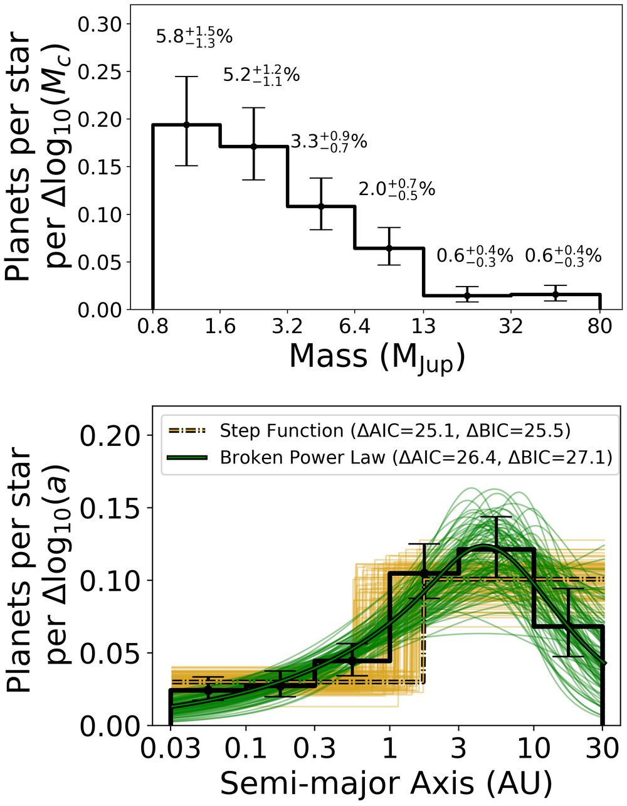
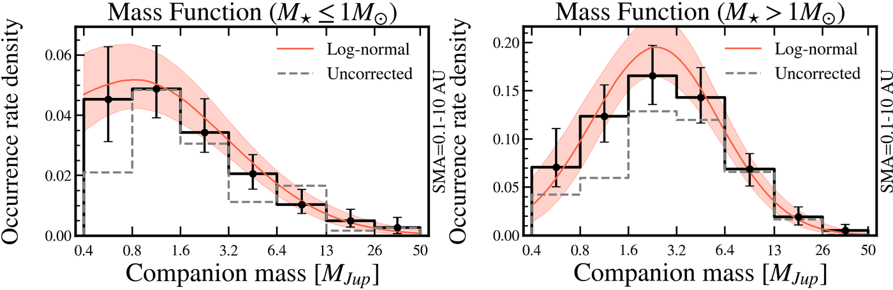

Planetary architectures
The Solar System has small rocky planets close to the Sun and giant planets farther out. Is that architecture common? For my dissertation, I designed and led the Distant Giants Survey, a three-year Keck RV search for long-period giant planets in systems where TESS had already found a small transiting planet.
Three years is short compared with the orbits of distant giants: a planet on a 10-year orbit appears only as a slow trend in the RVs. To recover these systems, I wrote ethraid, which combines RV trends with the 25-year baseline of Hipparcos-Gaia astrometry and with direct imaging.
- Distant giants are twice as common in systems with an inner small planet as around the average Sun-like star.
- These outer giants have lower eccentricities than a comparison population, pointing toward dynamically cool histories that let inner planets survive.
- In the California Legacy Survey, this enhancement shows no evidence of depending on stellar metallicity.

True-mass demographics
RVs measure only a planet's minimum mass, which blurs the boundaries between giant planets, brown dwarfs, and low-mass stars. Adding absolute astrometry from Hipparcos and Gaia breaks this degeneracy. I combined the California Legacy Survey with Hipparcos-Gaia astrometry to refit the orbits of 194 companions and measure their occurrence as a function of true mass and separation.
- About 40% of RV-identified "brown dwarfs" turned out to be stars.
- Occurrence varies smoothly from giant planets to brown dwarfs, suggesting that core accretion and gravitational instability produce companions in overlapping mass ranges.
- The brown dwarf desert extends out to 10 AU.
I apply the same approach to individual systems: characterizing companions to stars flagged by their astrometric accelerations for the GEODES survey, which prepares for Gaia DR4, and revisiting γ Cephei, host of the first exoplanet candidate.
Papers
- True-mass occurrence of the California Legacy Survey (2026) · ADS · arXiv
ethraid: RVs + astrometry + imaging (2024) · ADS · arXiv · code- GEODES I: three accelerating stars (2026) · ADS · arXiv
- The γ Cephei system (2026, accepted) · arXiv
- Related: eccentricities across the planet–brown dwarf transition (Gilbert et al. 2026) · ADS · arXiv

Stellar mass and planet demographics
Giant planets are more common around more massive stars, but do the distributions of planet mass and orbital separation also change with stellar mass? Core accretion predicts that they should: more massive stars have more massive disks, and their water snow lines lie farther out.
- Splitting my California Legacy Survey true-mass sample by host-star mass, I found tentative evidence that the planet mass function peaks near Jupiter's mass or below for lower-mass stars, but at several Jupiter masses for higher-mass stars (Van Zandt & Bowler, submitted).
- I am now studying how companion separations vary with stellar mass and metallicity (in prep.).
Gaia DR4 will make a controlled test possible. I have assembled a sample of about 7,000 stars from 0.6 to 1.2 solar masses, in two host-mass groups with matched metallicities, so that any difference in their planet populations can be attributed to stellar mass. With the GEODES team, I am vetting candidates now so that population analyses can begin as soon as DR4 is released.
